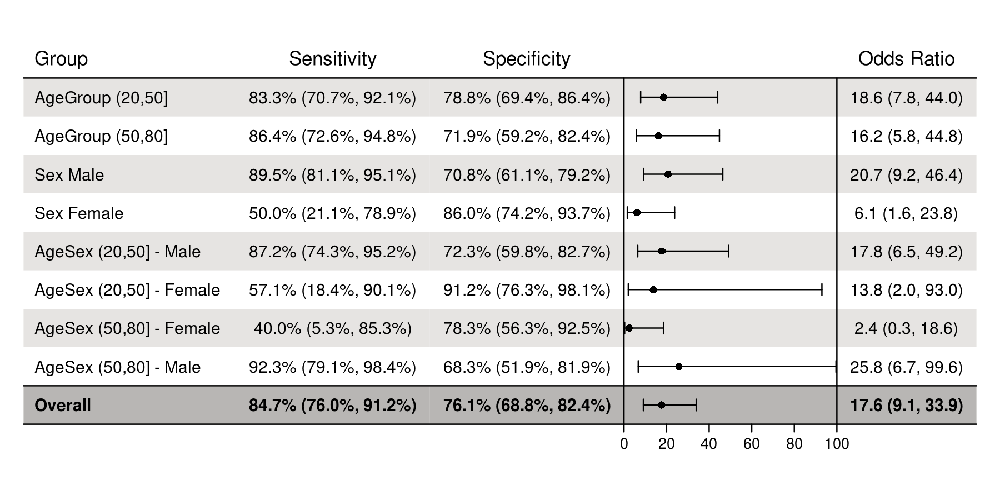
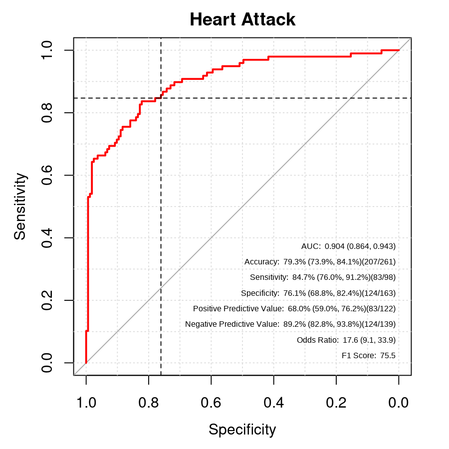

diagnosticSummary is designed to quickly create diagnostic summaries and reports for binary classification data.
Installation
You can install the development version from GitHub with:
Example
library(diagnosticSummary)
# Load sample data
data("dx_heart_failure")
head(dx_heart_failure)
#> AgeGroup Sex truth predicted AgeSex
#> 1 (20,50] Male 0 0.016164112 (20,50] - Male
#> 2 (20,50] Male 0 0.074193671 (20,50] - Male
#> 3 (20,50] Female 0 0.004677979 (20,50] - Female
#> 4 (20,50] Female 0 0.017567313 (20,50] - Female
#> 5 (20,50] Female 0 0.017517025 (20,50] - Female
#> 6 (20,50] Male 0 0.051570734 (20,50] - Male
# Create dx object
dx_obj <- dx(
data = dx_heart_failure,
study_name = "Heart Attack Prediction",
data_description = "Validation Data",
true_varname = "truth",
pred_varname = "predicted",
outcome_label = "Heart Attack",
threshold_range = c(.1,.2,.3),
setthreshold = .3,
grouping_variables = c("AgeGroup", "Sex", "AgeSex")
)| Measure | Estimate | Fraction | CI Type | Notes |
|---|---|---|---|---|
| AUC | 0.904 (0.864, 0.943) | DeLong | ||
| Accuracy | 79.3% (73.9%, 84.1%) | 207/261 | exact | |
| Sensitivity | 84.7% (76.0%, 91.2%) | 83/98 | exact | >=0.3 |
| Specificity | 76.1% (68.8%, 82.4%) | 124/163 | exact | <0.3 |
| Positive Predictive Value | 0.7 (0.6, 0.8) | 83/122 | exact | |
| Negative Predictive Value | 89.2% (82.8%, 93.8%) | 124/139 | exact | |
| Odds Ratio | 17.6 (9.1, 33.9) | Large sample | ||
| F1 Score | 75.5 |

